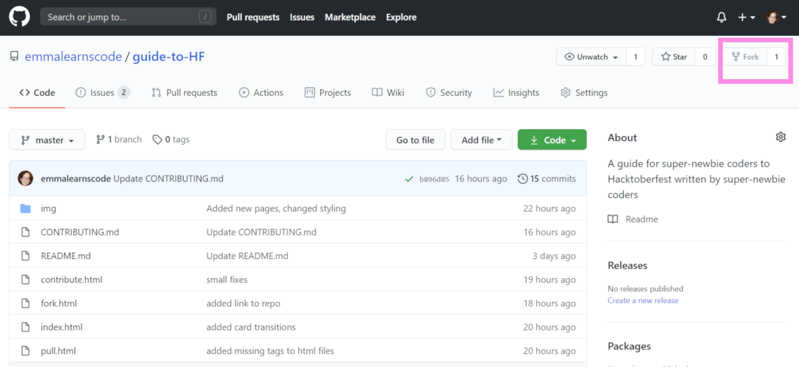
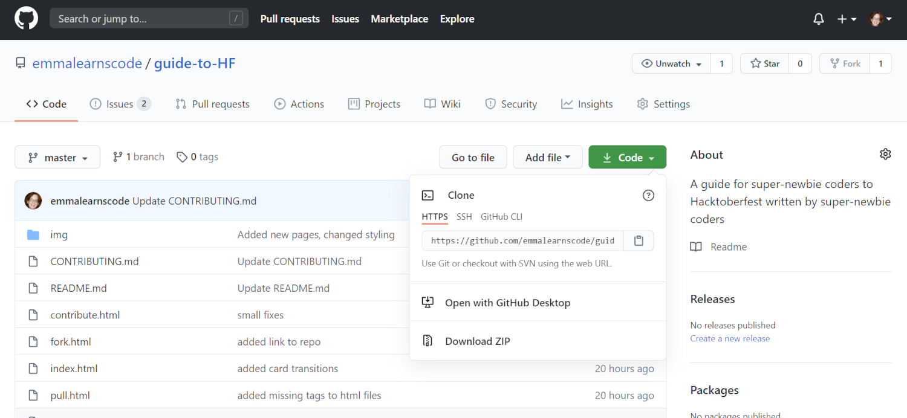
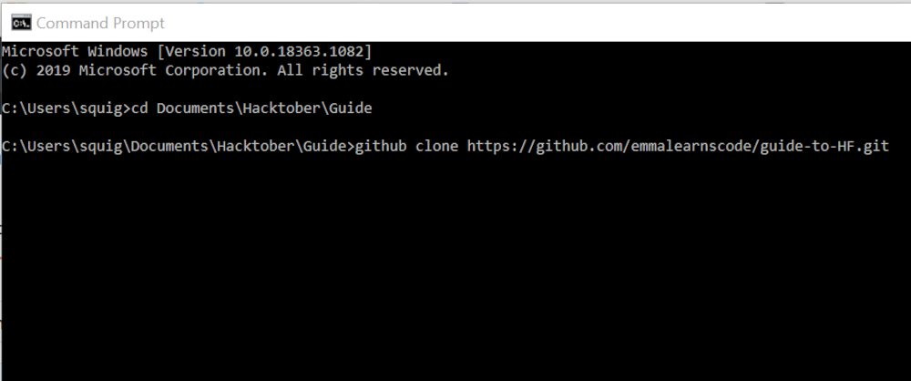

THE
Super-Newbie Coder's
GUIDE TO
Hacktoberfest
Working with the code
- To get hold of the code go to the GitHub repo for this project.
- Click on the "Fork" button in the top right to fork the code to your own GitHub repo.

- In your own repo, click on the green "Code" button. Copy the link.

- In the Command line navigate to the directory you want your code to be stored in. This is done with the "cd directory-name" command.
- Once inside the directory type git clone URL to clone the repository to your computer.

- You can now open the files on your machine and make all your changes.
- Once you're done, head over to Pull Requests to find out how to add your changes to the original repository.